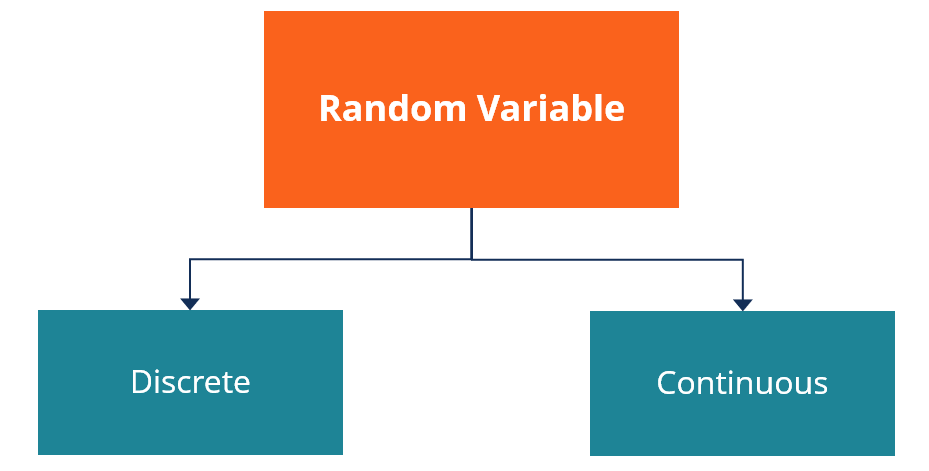

Statistics Course 2023/24
MSc in Cybersecurity - Sapienza Università di Roma
Riccardo Tuzzolino
Th5: Statistical Distributions: Continuous, Discrete, Properties and simulations
All probability distributions can be classified as either discrete probability distributions or continuous probability distributions, depending on whether they define probabilities associated with discrete variables or continuous variables.
So, a random variable is a function that assigns a value to all possible outcomes of an experiment.
The technical axiomatic definition requires the sample space \(\Omega\) to be a sample space of a probability space (\(\Omega, \mathcal{F}, P\)).
A probability space consists of three elements:
1. A sample space, \(\Omega\), which is the set of all possible outcomes.
2. An event space, \(\mathcal{F}\), which is a set of events, where an event is a set of outcomes in the sample space (subset of \(\Omega\)).
3. A probability function, \(P\), which assigns each event in the event space a probability, which is a number between 0 and 1.
The Soviet mathematician Andrey Kolmogorov introduced the notion of probability space, together with other axioms of probability, in the 1930s.
Note A set \(A\) is countable if either
- \(A\) is a finite set such as \(\{1,2,3,4\}\)
- It can be put in one-to-one correspondence with natural numbers (in this case the set is said to be countably infinite)
The probability distributions of discrete variables can be expressed in terms of probability mass functions (pmf).
Some examples of continuous distributions include:
The probability distributions of continuous variables can be expressed in terms of probability density functions (pdf).
Some examples of continuous distributions include:
A random variable \(X\) is a function from the sample space \(\Omega\) to the real numbers:
\[X: \Omega \rightarrow \mathbb{R}\]The technical axiomatic definition requires the sample space \(\Omega\) to be a sample space of a probability space (\(\Omega, \mathcal{F}, P\)).
A probability space consists of three elements:
1. A sample space, \(\Omega\), which is the set of all possible outcomes.
2. An event space, \(\mathcal{F}\), which is a set of events, where an event is a set of outcomes in the sample space (subset of \(\Omega\)).
3. A probability function, \(P\), which assigns each event in the event space a probability, which is a number between 0 and 1.
The Soviet mathematician Andrey Kolmogorov introduced the notion of probability space, together with other axioms of probability, in the 1930s.

Discrete Probability Distributions
A random variable \(X\) is discrete if it can take on a finite or countably infinite set of values.
- \(A\) is a finite set such as \(\{1,2,3,4\}\)
- It can be put in one-to-one correspondence with natural numbers (in this case the set is said to be countably infinite)
The probability distributions of discrete variables can be expressed in terms of probability mass functions (pmf).
Some examples of continuous distributions include:
- Bernoulli distribution: the discrete probability distribution of a random variable which takes the value 1 with probability \(p\) and the value 0 with probability \(q=1-p\).
- Binomial distribution: the discrete probability distribution of the number of successes in a sequence of \(n\) independent experiments, each with its own Boolean-valued outcome: success (with probability \(p\)) or failure (with probability \(q=1-p\)).
- Poisson distribution: expresses the probability of a given number of events occurring in a fixed interval of time or space if these events occur with a known constant mean rate and independently of the time since the last event.
Continuous Probability Distributions
A random variable \(X\) is continuous if it can take on an uncountable set of values.
Some examples of continuous distributions include:
- Uniform distribution: used to represent a randomly varying quantity within a range \([a, b]\) and whose probability of taking values in a subinterval of \([a, b]\) is proportional to their length.
- Exponential distribution: is the probability distribution of the time between events in a Poisson point process, i.e., a process in which events occur continuously and independently at a constant average rate.
- Normal distribution

Sources
[1] https://en.wikipedia.org/wiki/Random_variable
[2] https://en.wikipedia.org/wiki/Continuous_or_discrete_variable
[3] https://en.wikipedia.org/wiki/List_of_probability_distributions